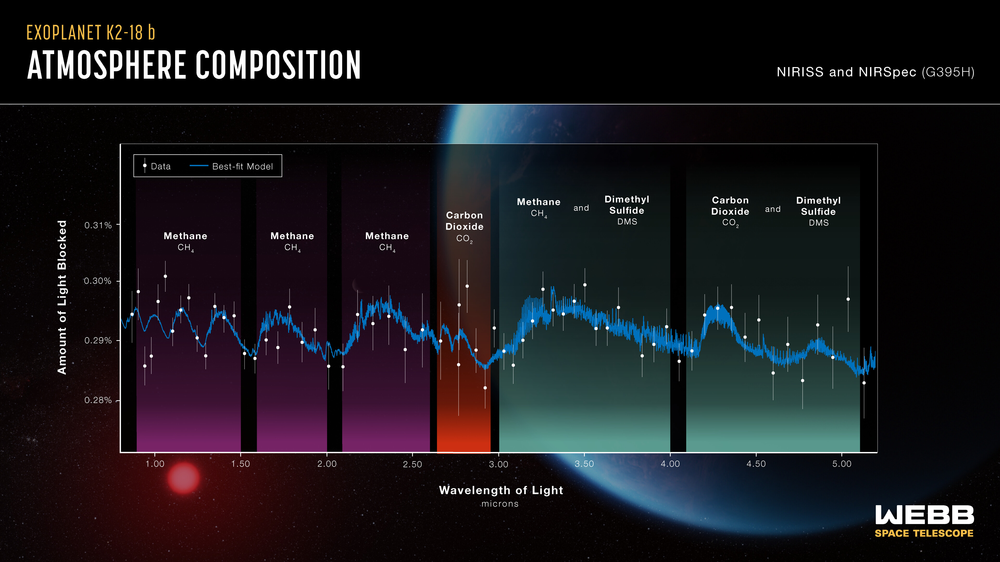

# Introduction to exoplanets, python, data, coding, statistics, etc We will use some data from the NASA exoplanet archive for this. <span class="fragment">Please open `all_code/coding_referesher_example.py` in Zed</span> -v- ## Course Roadmap - <span class="fragment">**Data Acquisition:** Querying NASA Exoplanet Archive via TAP</span> - <span class="fragment">**Visualisation:** Best practices & multidimensional population plots</span> - <span class="fragment">**Modeling & Optimization:** Linear/quadratic fits via Scipy</span> - <span class="fragment">**Priors & Likelihood:** Constructing the Bayesian Posterior</span> - <span class="fragment">**Model Comparison:** $\chi^2$, BIC, and WAIC</span> - <span class="fragment">**MCMC Sampling:** Posterior exploration using `emcee`</span> - <span class="fragment">**Code Crafting:** OOP, modular structure & testing</span> --- # 1. Accessing Astronomical Data - <span class="fragment">Frequently, we will access APIs from directly within python.</span> - <span class="fragment">This is most frequently done wit `astroquery`</span> - <span class="fragment">For this example, we will access the **[NASA Exoplanet Archive](https://exoplanetarchive.ipac.caltech.edu/)** TAP interface via `astroquery.ipac.nexsci.nasaexoplanetarchive`</span> - <span class="fragment">Likely need to filter out planets with highly uncertain parameters/nan values</span> - <span class="fragment">Prefer standard tabular formats (`astropy.table` / `pandas.DataFrame`)</span> -v- ## Querying Transit Planet Population - SQL direct ```python from astroquery.ipac.nexsci.nasaexoplanetarchive import NasaExoplanetArchive query = """ SELECT pl_name, pl_rade, pl_radeerr1, pl_bmasse, pl_bmasseerr1, pl_eqt, st_metratio FROM ps WHERE default_flag = 1 AND tran_flag = 1 AND pl_rade IS NOT NULL AND pl_bmasse IS NOT NULL """ data = NasaExoplanetArchive.query_criteria(select=query) ``` -v- ## Querying Transit Planet Population - Function ``` from astroquery.ipac.nexsci.nasaexoplanetarchive import NasaExoplanetArchive cols="pl_name,pl_rade,pl_radeerr1,pl_bmasse,pl_bmasseerr1,pl_eqt,sy_vmag,sy_gaiamag,st_mass,st_teff,st_rad" wh="default_flag=1 AND tran_flag=1 AND pl_rade IS NOT NULL AND pl_rade > 0 AND pl_bmasse IS NOT NULL AND pl_bmasse > 0 AND pl_bmasseerr1 IS NOT NULL AND pl_bmasseerr1 > 0 AND pl_radeerr1 IS NOT NULL" table = NasaExoplanetArchive.query_criteria(table="ps", where=wh, select=cols) ``` --- # 2. Visualisations ## What Makes a Great Publication Plot? - <span class="fragment">**Perceptually Uniform Color Maps:** Use `viridis`, `magma`, `plasma` (avoid `jet`)</span> - <span class="fragment">**Accessibility:** Ensure high contrast and colorblind safety</span> - <span class="fragment">**Self-Contained Labels:** Clear physical units on all axes (e.g., $R_\oplus$, $M_\oplus$, $K$)</span> - <span class="fragment">**Data-to-Ink Ratio:** Avoid unnecessary grids, borders, or chartjunk</span> -v- ## Your turn - the planetary population in multiple dimensions - Using matplotlib, - <span class="fragment">**X-axis:** Planetary Mass ($M_\oplus$)</span> - <span class="fragment">**Y-axis:** Planetary Radius ($R_\oplus$)</span> - <span class="fragment">**Color (cmap):** Planetary Equilibrium Temp ($T_{\text{eq}}$)</span> - <span class="fragment">**Marker Size:** Stellar Magnitude ($V$ or $K$)</span> - <span class="fragment">Try other parameters (e.g. period, temperature, stellar radius, etc)</span> - <span class="fragment">Try other plot types, e.g. a 2D kernel density estimation (KDE) with `seaborn`</span> -v- ``` scatter = ax.scatter(df['pl_bmasse'],df['pl_rade'], c=np.log10(df['pl_eqt']), s=(15 - df['sy_vmag'].clip(upper=15)) * 15 + 20, cmap='viridis', alpha=0.8, edgecolors='k',linewidth=0.5 ) cbar = fig.colorbar(scatter, ax=ax) cbar.set_label(r'$\log_{10}(\text{Teff } [K])$') ax.set_xlabel(r'Mass $M_{\text{Earth}}$ [$M_\text{Earth}$]') ax.set_ylabel(r'Planetary Radius $R_\oplus$ [$R_\text{Earth}$]') ax.set_title('Sub-Neptune Population Overview') ax.grid(True, linestyle='--', alpha=0.5) plt.show() ``` --- # 3. Building parametric models #### Example - Mass-Radius Relation - <span class="fragment">Planetary compositions mean $R$ and $M$ should correlate...</span> - <span class="fragment">Let's try to build a parametric model for exoplanet mass (specifically for _sub-Neptunes_ with $1.8 \le R_\oplus \le 6.0$)</span> - <span class="fragment">**Simplifying Assumption:** Radius $R$ is known precisely ($\sigma_R \ll \sigma_M$)</span> -v- ### Your turn: Building a parametric model in python - <span class="fragment">Create functions that, given a radius and a list of parameters (the polynomial coefficients) produces an expected mass.</span> - <span class="fragment">Model 1 (Linear): $\ln(M) = a \ln(R) + b$</span> - <span class="fragment">Model 2 (Quadratic): $\ln(M) = c_2 \ln(R)^2 + c_1 \ln(R) + c_0$</span> -v- ``` def linear_model(theta, x): # Define a linear model from parameter array theta a, b = theta return a * x + b def quadratic_model(theta, x): # Define a quadratic model from parameter array theta a, b, c = theta return a * x**2 + b * x + c ``` --- # Aside - the Normal distribution ## Observational Errors to the Gaussian Distribution - <span class="fragment">**Abraham de Moivre (1733):** First derived the bell curve as a limit of binomial distributions</span> - <span class="fragment">**The Astronomy Problem (1800s):** How do you combine noisy, discordant telescope measurements?</span> - **Carl Friedrich Gauss (1809):** Showed that assuming the **arithmetic mean** is optimal *forces* observational errors to follow a specific probability density: <span class="fragment">$$P(\epsilon) = \frac{1}{\sqrt{2\pi\sigma^2}} \exp\left(-\frac{\epsilon^2}{2\sigma^2}\right)$$</span> - <span class="fragment">Justified the **Method of Least Squares** on probabilistic grounds</span> --- # Orbit Determination in the 19th Century ## Ceres, Neptune, and the Power of Least Squares - **The Rediscovery of Ceres (1801):** - <span class="fragment">Giuseppe Piazzi lost track of dwarf planet Ceres after only 40 days of observations</span> - <span class="fragment">Gauss used least-squares & normal error assumptions to predict where it would reappear</span> - <span class="fragment">Astronomers found Ceres exactly where Gauss pointed his model!</span> - **The Discovery of Neptune (1846):** - <span class="fragment">Anomalies in Uranus's orbit pointed to an unseen 8th planet</span> - <span class="fragment">Urbain Le Verrier used orbital mechanics & observational error modeling to calculate its position</span> - <span class="fragment">Galle observed Neptune on the first night of searching—a triumph of celestial mechanics & data fitting</span> --- # 4. Model optimisation - <span class="fragment">We want to find the parameters which best fit the data</span> - <span class="fragment">The probability distribution for a datapoint, $y_i$, normally distributed from some model value $f(x)$, is $P(y_i | f) = \frac{\exp(-(y_i-f(x_i))^2/2\sigma_i^2))}{\sqrt{2\pi}\sigma_i}$</span> - <span class="fragment">The "likelihood" is the probability of obtaining your data $y$ given the model $f$ and the fixed observed values of $x_i$ and $\sigma_i$ $\mathcal{L} = P({y}^N_{i=1} | f, I) = \prod_{i=1}^N P(y_i | f) $</span> - <span class="fragment">The "log likelihood" remove the exponential term giving: $\ln \mathcal{L} = K - \sum_{i=1}^N\frac{(y_i-f(x_i))^2}{2\sigma_{yi}^2} = K - \frac{1}{2}\chi^2 $</span> -v- ### Your turn: Assessing log likelihood - <span class="fragment">Create a function which can compute the log likelihood for your example function</span> -v- ``` def log_likelihood(theta, x, y, yerr, model=linear_model, **kwargs): """ Gaussian log likelihood. """ ymodel = model(theta, x) log_lik = -0.5 * np.sum(((y - ymodel) / yerr)**2 + np.log(2 * np.pi * yerr**2)) return log_lik ``` -v- ## Optimization: Gradient Descent vs. Direct Search - <span class="fragment">**Best-Fit Search:** Finding parameter set $\widehat{\theta}$ that maximises log likelihood.</span> - <span class="fragment">**Gradient Descent:** Steps downhill using local "slope" in likelihood, efficient for high dimensions</span> - <span class="fragment">**Nelder-Mead:** Simplex direct search, useful when gradients are noisy or unavailable</span> -v- <img src="../slide_data/slide_images/Gradient descent.png" class="r-stretch"> -v- ## Frequentist Metrics: $\chi^2$ & BIC - <span class="fragment">**$\chi^2$ Minimization:** $\chi^2 = \sum \frac{(y_i - f(x_i, \theta))^2}{\sigma_i^2}$</span> - <span class="fragment">For well-behaved gaussian distributions, maximising log likelihood is equivalent to minimising $\chi^2$.</span> - <span class="fragment">**Reduced $\chi^2$ ($\chi^2_\nu$):** $\chi^2 / (N - k)$</span> - <span class="fragment">**Bayesian Information Criterion (BIC):**</span> <span class="fragment">$$\text{BIC} = k \ln(N) - 2 \ln(\widehat{L}) \approx \chi^2 + k \ln(N)$$</span> - <span class="fragment">$\Delta\text{BIC} > 10$ indicates strong evidence against the higher-BIC model</span> -v- #### The importance of model comparison <p></p> -v- #### Your turn: model comparison - Compute the BIC for the two models (linear and quadratic) - Which model is preferred? -v- ``` def BIC(loglik,n_params,nsamps): return 2 * loglik + n_params * np.log(nsamps) ``` --- --- # 5. Bayesian Priors & Posterior Formulation - <span class="fragment">We usually have information about our parameters - **priors**</span> - <span class="fragment">This could be from past observations or theoretical considerations</span> -v- - <span class="fragment">To compute the most likely model given the datapoints and the priors, we use Bayes theorem: $ P(f | {y}^N_{i=1}, I) = \frac{P({y}^N_{i=1} | f, I) P(f | I)}{P({y}^N_{i=1} | I)}$:</span> - <span class="fragment">The likelihood function $P({y}^N_{i=1} | f, I)$</span> - <span class="fragment">Our prior knowledge on model parameters $P(f | I)$</span> - <span class="fragment">$P({y}^N_{i=1} | I)$ - the probability of datapoints given their position and error (Typically this constant and can be ignored.)</span> -v- ## Types of Prior - **Uniform (Flat) Priors:** - <span class="fragment">Restricts parameters to physically allowed ranges (e.g., positive mass/slope)</span> - <span class="fragment">Gives equal probability to all values within bounds, 0 outside</span> - **Gaussian (Informative) Priors:** - <span class="fragment">Incorporates previous measurements (e.g., stellar abundance or known inclination)</span> - <span class="fragment">Penalizes parameter values as they move further from the expected mean</span> -v- #### Your turn: Adding a prior function - <span class="fragment">Add a function which, given priors for each parameter, adds a log prior term (e.g. ensures the gradient is uniformbetween 0 and 5)</span> - <span class="fragment">Log likelihood & log prior can then produce a combined **log probability** term for gradient descent.</span> -v- ``` def log_prior_linear(theta): """ Calculates log prior using a combination of: 1. Uniform prior on slope 'a' (must be physical: 0 < a < 5) 2. Gaussian prior on intercept 'b' centered on 0.5 with sigma=2.5 """ a, b = theta # 1. Uniform Prior component if not (0.0 < a < 5.0): return -np.inf # Reject parameters outside range # 2. Gaussian Prior component: log N(b | mu=0.5, sigma=1.0) mu_b, sigma_b = 0.5, 5.0 log_prior_b = -0.5 * ((b - mu_b) / sigma_b)**2 - np.log(sigma_b * np.sqrt(2 * np.pi)) return log_prior_b ``` --- # 6. MCMC & Sampling ## Posterior Exploration - <span class="fragment">Single best-fits ignore parameter uncertainties and complex parameter trade-offs</span> - <span class="fragment">**Markov Chain Monte Carlo (MCMC):** Explores the full probability distribution $P(\theta|D)$</span> - <span class="fragment">Uses **Metropolis** algorithm to [step around parameter space](https://chi-feng.github.io/mcmc-demo/app.html?algorithm=RandomWalkMH&target=standard).</span> - <span class="fragment">**Ensemble Samplers (`emcee`):** Uses multiple interconnected "walkers" to map parameter space</span> -v- #### Your turn: running emcee - <span class="fragment">Use emcee and your log probaility term to sample the parameters and their values</span> - <span class="fragment">Use the `corner` module to plot the sampled parameter estimates</span> -v- - <span class="fragment">**Bayesian Evidence ($\mathcal{Z}$):** Integral of Likelihood $\times$ Prior over all parameters</span> <span class="fragment">$$\mathcal{Z} = \int P(D|\theta) P(\theta) d\theta$$</span> <span class="fragment"><img src="../slide_data/slide_images/Evidence.png" height="750"></span> -v- **Advanced Samplers:** - <span class="fragment">**HMC / NUTS (`PyMC`):** Uses gradient physics to navigate high-dimensional spaces ([e.g.](https://chi-feng.github.io/mcmc-demo/app.html?algorithm=EfficientNUTS&target=banana))</span> - <span class="fragment">**Nested Sampling (`dynesty`, `ultranest`):** Integrates shell-by-shell to directly compute $\mathcal{Z}$</span> -v- ## MCMC Diagnostic Checklist 1. <span class="fragment">Inspect trace plots for convergence and initial burn-in phase</span> 2. <span class="fragment">Check Integrated Autocorrelation Time ($\tau$)</span> 3. <span class="fragment">Target total sample size $\gg 50 \times \tau$</span> 4. <span class="fragment">Plot corner distributions to reveal parameter correlations</span> --- # 7. Advanced Model Selection ## Information Criteria with `ArviZ` - <span class="fragment">Simple $\chi^2$ and BIC fail when priors strongly constrain parameters or parameters correlate</span> - <span class="fragment">**Watanabe-Akaike Information Criterion (WAIC):** Fully Bayesian metric predicting out-of-sample data accuracy</span> - <span class="fragment">**LOO (Leave-One-Out Cross-Validation):** Estimates model generalization error without needing to re-fit</span> --- # 8. Software Architecture in Astrophysics ## Code Organization Hierarchy - <span class="fragment">**Scripts:** Quick data processing (hard to reuse or test)</span> - <span class="fragment">**Functions:** Modular, single-responsibility logic with clear docstrings</span> - <span class="fragment">**Classes:** Object-oriented code grouping data, models, and fitting methods together</span> -v- ## Production-Grade Python Tips - <span class="fragment">**Type Hinting & Docstrings:** Makes code readable and self-documenting</span> - <span class="fragment">**Unit Testing (`pytest`):** Automatically catches numerical bugs and regressions</span> - <span class="fragment">**Version Control:** Git history for reproducible scientific workflows</span>